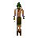

Chuck

| Config name | chuck_woodman |
| NPC id | 29 |
| Combat level | 1 |
| Wander range | 5 tiles from spawn |
| Area folder | area_ardougne_east |
| Defined in | scripts/areas/area_ardougne_east/configs/ardougne_east.npc |
| Bonuses | Strength bonus 7, Stab def 6, Slash def 7, Crush def 7 |
Chuck
He's a lumberjack, and he's ok.
Locations
This NPC is not placed on the map by the map files (it may be spawned by scripts, e.g. during quests, or be a variant).